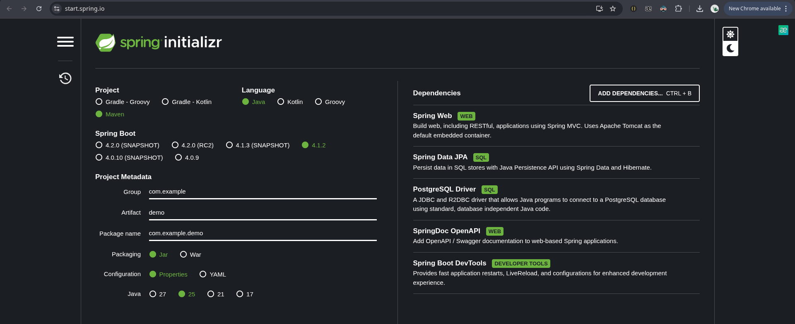

Create a REST API from start.spring.io connected to your demo_db PostgreSQL database using Spring Data JPA.
Open https://start.spring.io/ and choose:

| Setting | Value to Select | Why |
|---|---|---|
| Project | Maven | Manages dependencies and builds the project (pom.xml) |
| Language | Java | Programming language |
| Spring Boot | Latest stable (not SNAPSHOT) | Stable release |
| Group | com.example | Base package |
| Artifact | demo | Project folder & app name |
| Package name | com.example.demo | Root Java package |
| Packaging | Jar | Standard runnable Spring Boot app |
| Java | 25 (or your installed JDK, e.g. 21) | Matches your local JDK |
@RestController, HTTP endpoints, JSON conversion, and the built-in Tomcat server.@Entity, JpaRepository, and automatic SQL queries (SELECT, INSERT, DELETE)./swagger-ui.html to test endpoints in the browser.Click GENERATE and extract the downloaded demo.zip file.
demo_db Is Running & Open in VS Codedocker compose up -d postgres pgadmin and created demo_db in pgAdmin at http://localhost:5050).demo folder (containing pom.xml).application.propertiesOpen src/main/resources/application.properties and paste:
spring.application.name=demo
spring.datasource.url=jdbc:postgresql://localhost:5432/demo_db
spring.datasource.username=ems_user
spring.datasource.password=ems_password
spring.jpa.hibernate.ddl-auto=update
spring.jpa.show-sql=truedocker-compose.yml (ems_user / ems_password). Your Spring Boot app runs outside Docker, so it connects to localhost:5432. ddl-auto=update creates your tables automatically!
Inside src/main/java/com/example/demo/, organize your classes into 3 folders:
src/main/java/com/example/demo/
├── DemoApplication.java // Entry point (just SpringApplication.run)
├── model/ // Database tables (@Entity)
│ ├── Department.java // Guided Example 1
│ ├── Employee.java // Guided Example 2 (FK to Department)
│ └── Task.java // Student Exercise (FK to Employee)
├── repository/ // Talks to PostgreSQL (JpaRepository)
│ ├── DepartmentRepository.java
│ ├── EmployeeRepository.java
│ └── TaskRepository.java // Student Exercise
└── controller/ // REST API endpoints (@RestController)
├── DepartmentController.java
├── EmployeeController.java
└── TaskController.java // Student Exercisemodel/)Use @Entity to mark each class as a PostgreSQL table, @Id + @GeneratedValue for auto-increment IDs, and @ManyToOne for foreign keys.
model/Department.javapackage com.example.demo.model;
import jakarta.persistence.Entity;
import jakarta.persistence.GeneratedValue;
import jakarta.persistence.GenerationType;
import jakarta.persistence.Id;
@Entity
public class Department {
@Id
@GeneratedValue(strategy = GenerationType.IDENTITY)
public int id;
public String name;
public String location;
public Department() {
}
}model/Employee.java (with Foreign Key to Department)package com.example.demo.model;
import jakarta.persistence.Entity;
import jakarta.persistence.GeneratedValue;
import jakarta.persistence.GenerationType;
import jakarta.persistence.Id;
import jakarta.persistence.ManyToOne;
@Entity
public class Employee {
@Id
@GeneratedValue(strategy = GenerationType.IDENTITY)
public int id;
public String name;
public String role;
@ManyToOne
public Department department; // creates foreign key column department_id!
public Employee() {
}
}repository/)Spring Data JPA generates all SQL queries automatically from these 3-line interfaces.
repository/DepartmentRepository.javapackage com.example.demo.repository;
import com.example.demo.model.Department;
import org.springframework.data.jpa.repository.JpaRepository;
public interface DepartmentRepository extends JpaRepository<Department, Integer> {
}repository/EmployeeRepository.javapackage com.example.demo.repository;
import com.example.demo.model.Employee;
import org.springframework.data.jpa.repository.JpaRepository;
public interface EmployeeRepository extends JpaRepository<Employee, Integer> {
}controller/)controller/DepartmentController.javapackage com.example.demo.controller;
import com.example.demo.model.Department;
import com.example.demo.repository.DepartmentRepository;
import org.springframework.beans.factory.annotation.Autowired;
import org.springframework.http.HttpStatus;
import org.springframework.web.bind.annotation.*;
import org.springframework.web.server.ResponseStatusException;
import java.util.List;
@RestController
public class DepartmentController {
@Autowired
private DepartmentRepository departmentRepository;
// GET http://localhost:8080/api/departments
@GetMapping("/api/departments")
@ResponseStatus(HttpStatus.OK)
public List<Department> getAllDepartments() {
return departmentRepository.findAll();
}
// GET http://localhost:8080/api/departments/{id}
@GetMapping("/api/departments/{id}")
@ResponseStatus(HttpStatus.OK)
public Department getDepartmentById(@PathVariable int id) {
Department department = departmentRepository.findById(id).orElse(null);
if (department == null) {
throw new ResponseStatusException(HttpStatus.NOT_FOUND);
}
return department;
}
// POST http://localhost:8080/api/departments
@PostMapping("/api/departments")
@ResponseStatus(HttpStatus.CREATED)
public Department createDepartment(@RequestBody Department department) {
return departmentRepository.save(department);
}
// DELETE http://localhost:8080/api/departments/{id}
@DeleteMapping("/api/departments/{id}")
@ResponseStatus(HttpStatus.NO_CONTENT)
public void deleteDepartment(@PathVariable int id) {
if (departmentRepository.existsById(id) == false) {
throw new ResponseStatusException(HttpStatus.NOT_FOUND);
}
departmentRepository.deleteById(id);
}
}controller/EmployeeController.javapackage com.example.demo.controller;
import com.example.demo.model.Employee;
import com.example.demo.repository.EmployeeRepository;
import org.springframework.beans.factory.annotation.Autowired;
import org.springframework.http.HttpStatus;
import org.springframework.web.bind.annotation.*;
import org.springframework.web.server.ResponseStatusException;
import java.util.List;
@RestController
public class EmployeeController {
@Autowired
private EmployeeRepository employeeRepository;
// GET http://localhost:8080/api/employees
@GetMapping("/api/employees")
@ResponseStatus(HttpStatus.OK)
public List<Employee> getAllEmployees() {
return employeeRepository.findAll();
}
// GET http://localhost:8080/api/employees/{id}
@GetMapping("/api/employees/{id}")
@ResponseStatus(HttpStatus.OK)
public Employee getEmployeeById(@PathVariable int id) {
Employee employee = employeeRepository.findById(id).orElse(null);
if (employee == null) {
throw new ResponseStatusException(HttpStatus.NOT_FOUND);
}
return employee;
}
// POST http://localhost:8080/api/employees
@PostMapping("/api/employees")
@ResponseStatus(HttpStatus.CREATED)
public Employee createEmployee(@RequestBody Employee employee) {
return employeeRepository.save(employee);
}
// DELETE http://localhost:8080/api/employees/{id}
@DeleteMapping("/api/employees/{id}")
@ResponseStatus(HttpStatus.NO_CONTENT)
public void deleteEmployee(@PathVariable int id) {
if (employeeRepository.existsById(id) == false) {
throw new ResponseStatusException(HttpStatus.NOT_FOUND);
}
employeeRepository.deleteById(id);
}
}DemoApplication.java and click Run above main() (or press F5).POST /api/departments:
{ "name": "Engineering", "location": "Floor 3" }1 via POST /api/employees:
{ "name": "Alice", "role": "Developer", "department": { "id": 1 } }Task (with Foreign Key to Employee)Now it's your turn! Add a Task table in PostgreSQL linked to Employee.
model/Task.java:
@Entity@Id @GeneratedValue(strategy = GenerationType.IDENTITY) public int id;public String title;public boolean completed; (e.g. false or true)@ManyToOne public Employee employee; (foreign key to Employee!)public Task() {}repository/TaskRepository.java:
public interface TaskRepository extends JpaRepository<Task, Integer> {}controller/TaskController.java:
GET /api/tasks → taskRepository.findAll() (200 OK)GET /api/tasks/{id} → taskRepository.findById(id).orElse(null) (200 OK or 404 Not Found)POST /api/tasks → taskRepository.save(task) (201 Created)DELETE /api/tasks/{id} → check existsById(id) == false, otherwise deleteById(id) (204 No Content or 404)model/Task.javapackage com.example.demo.model;
import jakarta.persistence.Entity;
import jakarta.persistence.GeneratedValue;
import jakarta.persistence.GenerationType;
import jakarta.persistence.Id;
import jakarta.persistence.ManyToOne;
@Entity
public class Task {
@Id
@GeneratedValue(strategy = GenerationType.IDENTITY)
public int id;
// TODO: Add public String title; and public boolean completed;
// TODO: Add @ManyToOne public Employee employee;
public Task() {
}
}controller/TaskController.javapackage com.example.demo.controller;
import com.example.demo.model.Task;
import com.example.demo.repository.TaskRepository;
import org.springframework.beans.factory.annotation.Autowired;
import org.springframework.http.HttpStatus;
import org.springframework.web.bind.annotation.*;
import org.springframework.web.server.ResponseStatusException;
import java.util.List;
@RestController
public class TaskController {
@Autowired
private TaskRepository taskRepository;
// TODO: GET /api/tasks
// TODO: GET /api/tasks/{id}
// TODO: POST /api/tasks
// TODO: DELETE /api/tasks/{id}
}